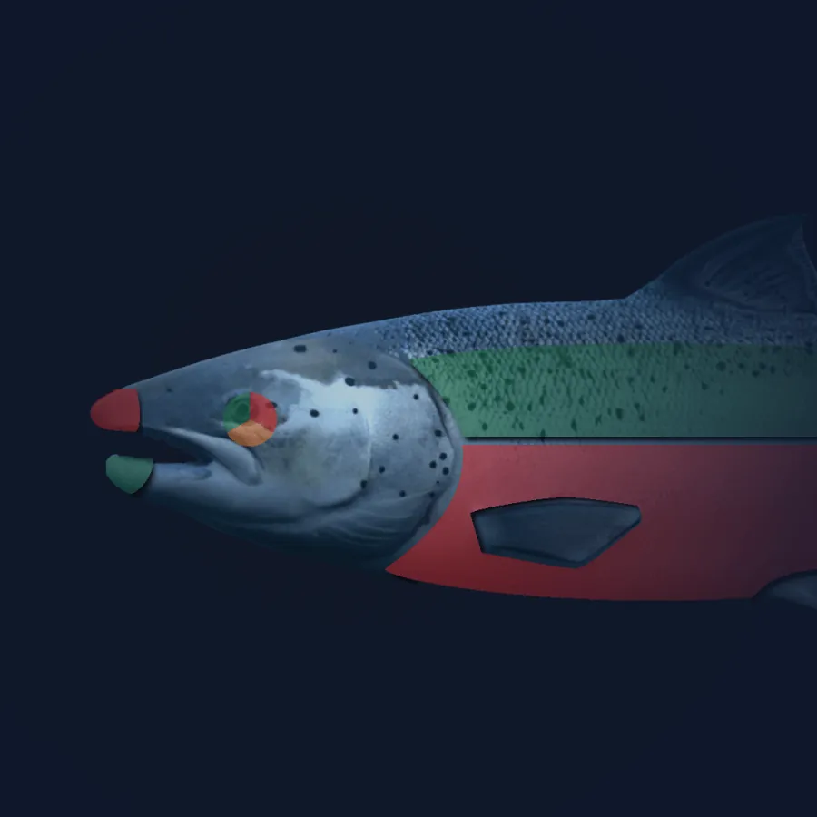
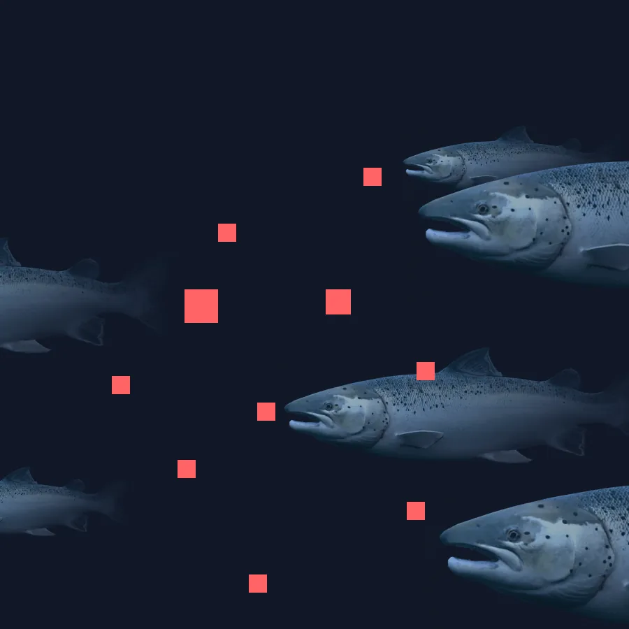
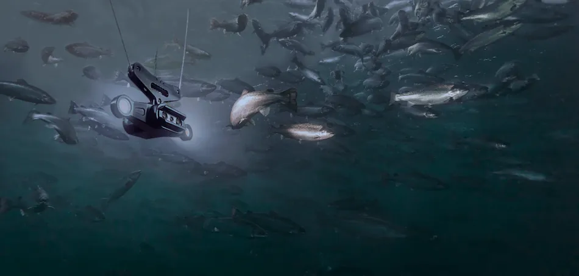

Forside/Produkter
Produkter
Fem innsiktsområder fra samme kamera: vekt, lus, velferd, fôring og adferd. Tallene havner i portalen, hvor de blir beslutningsstøtte.
01 / Vekt
Biomasse, vekt og vekst
Estimering av vekt og biomasse gjør det mulig å følge veksten gjennom produksjonsfasen, ikke bare ved prøvetaking.
- Vektfordeling i merden.
- Utvikling over tid.
- Grunnlag for biomasseberegning.


02 / Lus
Automatisk lusetelling
Automatisk telling og prediksjon gir oversikt over lusesituasjonen mellom de manuelle tellingene.
- Telleregistrering døgnet rundt.
- Prediksjon framover.
- Bedre planlegging av tiltak.
03 / Velferd
Sanntidsinnsikt i fiskevelferd
Velferdsindikatorer gjør endringer synlige før de blir et problem, og gir et felles bilde for drift og fiskehelse.
- Indikatorer per merd.
- Endringer over tid.
- Dokumentasjon i portalen.


04 / Fôring
Appetitt og fôring
Appetittprognose og sonar gir grunnlag for å tilpasse fôringsmengden til det fisken faktisk spiser.
- Appetittprognose.
- Sonar for mengde.
- Mindre overfôring.
05 / Adferd
Adferd gjennom døgnet
Hvordan fisken svømmer og fordeler seg i merden sier noe om trivsel, oksygen og fôring.
| Område | Hva du får |
|---|---|
| Vekt | Biomasse, vektfordeling og vekst. |
| Lus | Antall, utvikling og prediksjon. |
| Velferd | Indikatorer per merd over tid. |
| Fôring | Appetitt og fôrforbruk. |
| Adferd | Svømmemønster og fordeling. |
Hvilke data trenger dere?
Vi setter opp en demo med deres egne spørsmål som utgangspunkt.